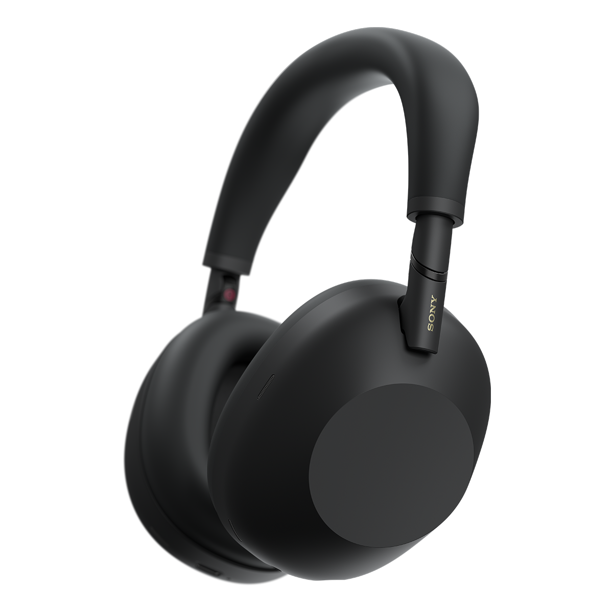

WH-1000XM6
Some features confirmed on Windows
Sony preview release 0.1.3
Report your test results ↗
The current picture.
Untested: no sufficient hardware result.
Unknown: support itself is not established.
| Feature | Windows | macOS | Linux |
|---|---|---|---|
| Control connection | Confirmed working Windows control session used during firmware 3.1.5 tests. Evidence ↓ | Not implemented macOS control connections are disabled. Paired-device discovery does not establish control support. Evidence ↓ | Confirmed working BlueZ/RFCOMM implementation exists; model-specific Linux testing remains outstanding. Evidence ↓ |
| Battery readout | Confirmed working No model-specific hardware result recorded. Evidence ↓ | Not implemented macOS control connections are disabled. Paired-device discovery does not establish control support. Evidence ↓ | Confirmed working BlueZ/RFCOMM implementation exists; model-specific Linux testing remains outstanding. Evidence ↓ |
| Noise control & transparency | Confirmed working All three modes and physical NC/AMB button tracking confirmed on firmware 3.1.5. Evidence ↓ | Not implemented macOS control connections are disabled. Paired-device discovery does not establish control support. Evidence ↓ | Confirmed working BlueZ/RFCOMM implementation exists; model-specific Linux testing remains outstanding. Evidence ↓ |
| Ambient sound level | Device does not support it No model-specific hardware result recorded. Evidence ↓ | Not implemented macOS control connections are disabled. Paired-device discovery does not establish control support. Evidence ↓ | Device does not support it BlueZ/RFCOMM implementation exists; model-specific Linux testing remains outstanding. Evidence ↓ |
| Equalizer & presets | Confirmed working One band write/readback recorded. Full preset and audio equivalence are unverified. Evidence ↓ | Not implemented macOS control connections are disabled. Paired-device discovery does not establish control support. Evidence ↓ | Confirmed working BlueZ/RFCOMM implementation exists; model-specific Linux testing remains outstanding. Evidence ↓ |
| Bass control | Device does not support it A separate bass slider is not established for this ten-band EQ model. Evidence ↓ | Not implemented macOS control connections are disabled. Paired-device discovery does not establish control support. Evidence ↓ | Device does not support it BlueZ/RFCOMM implementation exists; model-specific Linux testing remains outstanding. Evidence ↓ |
| Listening modes | Confirmed working Model-gated Standard, Background Music and Cinema paths exist; complete hardware coverage is unverified. Evidence ↓ | Not implemented macOS control connections are disabled. Paired-device discovery does not establish control support. Evidence ↓ | Confirmed working BlueZ/RFCOMM implementation exists; model-specific Linux testing remains outstanding. Evidence ↓ |
| Device settings | Confirmed working No model-specific hardware result recorded. Evidence ↓ | Not implemented macOS control connections are disabled. Paired-device discovery does not establish control support. Evidence ↓ | Confirmed working BlueZ/RFCOMM implementation exists; model-specific Linux testing remains outstanding. Evidence ↓ |
| Firmware updates & reset | Not implemented Firmware updates and factory reset are not implemented. Evidence ↓ | Not implemented macOS control connections are disabled. Paired-device discovery does not establish control support. Evidence ↓ | Not implemented Firmware updates and factory reset are not implemented. Evidence ↓ |
Test context
- Firmware
- 3.1.5
- App version
- Not recorded
- Original test date
- Not recorded
- Registry review
- 2026-11-16
Missing test details remain unrecorded. The registry review date is not a hardware test date.
Evidence & boundaries.
- hardware confirmation
XM6 Windows noise-control confirmation ↗
Owner confirmed three modes, readback and physical-button tracking on firmware 3.1.5. Original test date and app version were not recorded.
- partial hardware confirmation
XM6 EQ validation boundaries ↗
Project records report one band change/readback. Screenshot curves use custom EQ; complete preset equivalence is not established.
- hardware confirmation
WH-1000XM6: Battery readout on windows ↗
No model-specific hardware result recorded. firmware: 3.1.5 appVersion: v0.1.9 testedOn: 2026-11-16
- owner review
WH-1000XM6: Ambient sound level on windows ↗
No model-specific hardware result recorded. firmware: 3.1.5 appVersion: v0.1.9 testedOn: 2026-11-16
- hardware confirmation
WH-1000XM6: Equalizer & presets on windows ↗
One band write/readback recorded. Full preset and audio equivalence are unverified. firmware: 3.1.5 appVersion: v0.1.9 testedOn: 2026-11-16
- owner review
WH-1000XM6: Bass control on windows ↗
A separate bass slider is not established for this ten-band EQ model. firmware: 3.1.5 appVersion: v0.1.9 testedOn: 2026-11-16
- hardware confirmation
WH-1000XM6: Listening modes on windows ↗
Model-gated Standard, Background Music and Cinema paths exist; complete hardware coverage is unverified. firmware: 3.1.5 appVersion: v0.1.9 testedOn: 2026-11-16
- hardware confirmation
WH-1000XM6: Device settings on windows ↗
No model-specific hardware result recorded. firmware: 3.1.5 appVersion: v0.1.9 testedOn: 2026-11-16
- source review
Implementation and platform scope ↗
Sony preview release baseline: 0.1.3. Linux hardware validation remains outstanding; macOS control connections are disabled. Code paths alone are not hardware confirmation.
- hardware confirmation
WH-1000XM6: Control connection on linux ↗
BlueZ/RFCOMM implementation exists; model-specific Linux testing remains outstanding. firmware: 3.1.5 appVersion: v0.1.9 testedOn: 2026-11-16
- hardware confirmation
WH-1000XM6: Battery readout on linux ↗
BlueZ/RFCOMM implementation exists; model-specific Linux testing remains outstanding. firmware: 3.1.5 appVersion: v0.1.9 testedOn: 2026-11-16
- hardware confirmation
WH-1000XM6: Noise control & transparency on linux ↗
BlueZ/RFCOMM implementation exists; model-specific Linux testing remains outstanding. firmware: 3.1.5 appVersion: v0.1.9 testedOn: 2026-11-16
- owner review
WH-1000XM6: Ambient sound level on linux ↗
BlueZ/RFCOMM implementation exists; model-specific Linux testing remains outstanding. firmware: 3.1.5 appVersion: v0.1.9 testedOn: 2026-11-16
- hardware confirmation
WH-1000XM6: Equalizer & presets on linux ↗
BlueZ/RFCOMM implementation exists; model-specific Linux testing remains outstanding. firmware: 3.1.5 appVersion: v0.1.9 testedOn: 2026-11-16
- owner review
WH-1000XM6: Bass control on linux ↗
BlueZ/RFCOMM implementation exists; model-specific Linux testing remains outstanding. firmware: 3.1.5 appVersion: v0.1.9 testedOn: 2026-11-16
- hardware confirmation
WH-1000XM6: Listening modes on linux ↗
BlueZ/RFCOMM implementation exists; model-specific Linux testing remains outstanding. firmware: 3.1.5 appVersion: v0.1.9 testedOn: 2026-11-16
- hardware confirmation
WH-1000XM6: Device settings on linux ↗
BlueZ/RFCOMM implementation exists; model-specific Linux testing remains outstanding. firmware: 3.1.5 appVersion: v0.1.9 testedOn: 2026-11-16
Help fill the gaps.
Include your OS, firmware, app version, test date and observed result. Remove Bluetooth addresses, serial numbers and pairing secrets. Reports are reviewed before status changes.
Submit a model-specific test report ↗